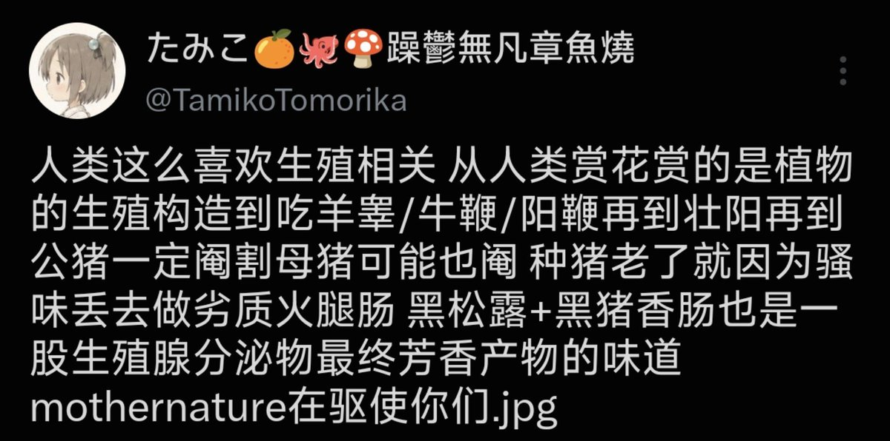

对的其实章鱼喜欢口交 从雄章鱼那条专门用来交配的第三右腕叫hectocotylus 到雌章鱼会把精子囊含在嘴里孵化 到太平洋条纹章鱼面对面嘴对嘴交配 科学家管这叫beak-to-beak kiss 到深海章鱼交配完雄性就死了 雌性守卵几个月不吃不喝最后也死了 到阿根廷巨章鱼(actually argonaut)雄的只有雌的1/10大 交配的时候把腕甩给雌的 自己游走等死 到章鱼有九个脑子两个心脏蓝色血液 到它们会在海底用椰子壳搭房子 到它们会开罐头 到它们会假装是椰子 到它们会和潜水员玩 到科学家做完实验发现章鱼在鱼缸里喷水关灯抗议 到最离谱的是它们口对口传递精子 两个喙互相磨蹭 像在接吻 结果你人类还在那装什么神圣
章鱼几亿年前就会舌吻了.jpg
RT:
章鱼几亿年前就会舌吻了.jpg
RT:
